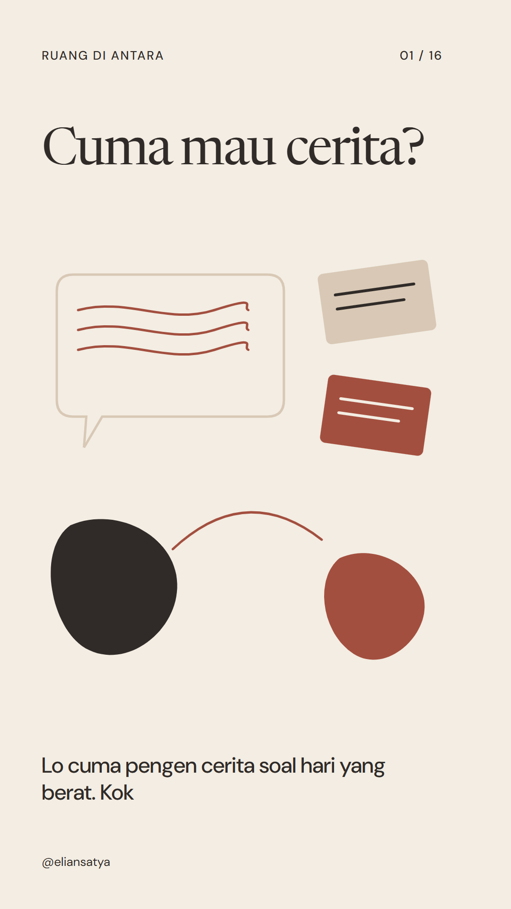
Show story colliding with unsolicited solution cards.
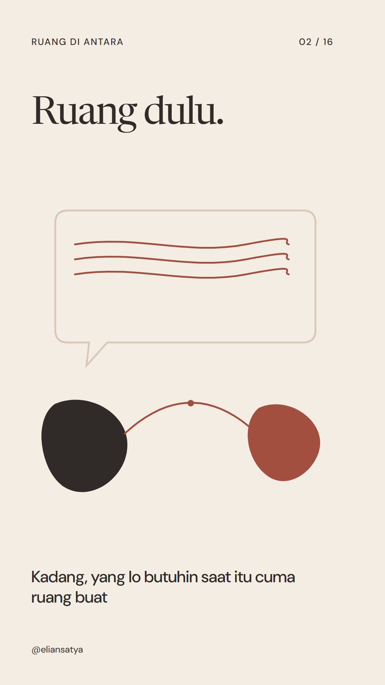
Offer the value early: open room for the speaker.
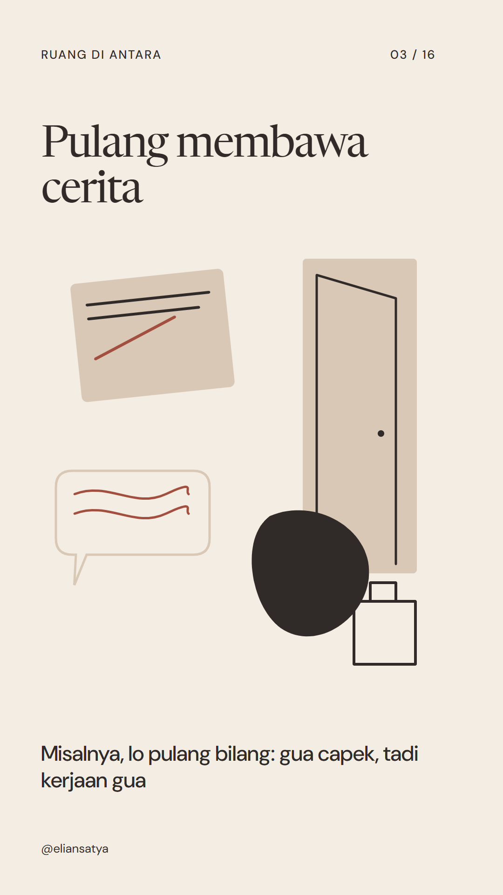
Ground the fictional account in a doorway, bag and marked work sheet.
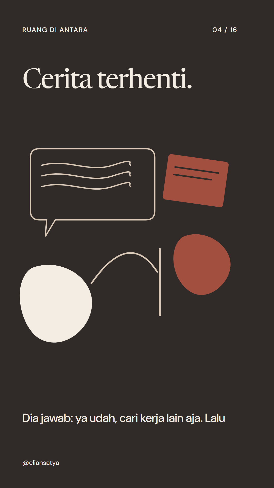
Let the outgoing ribbon meet a blocking response, then stop.
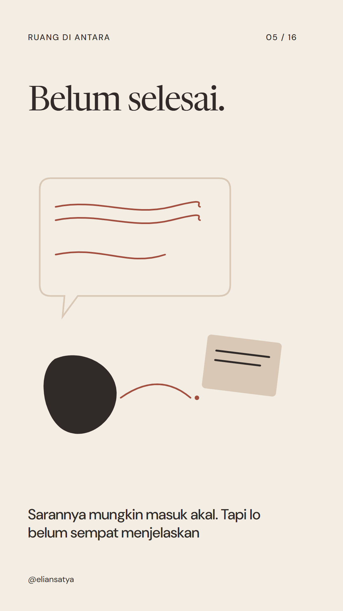
Keep unfinished speech visible beside a plausible solution.
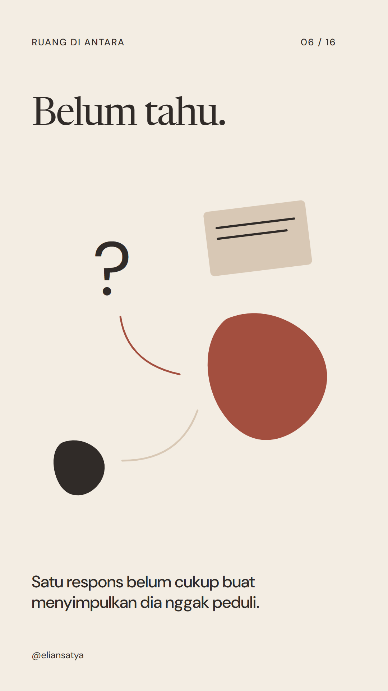
Make the listener and an uncertain question the focus; avoid motive diagnosis.
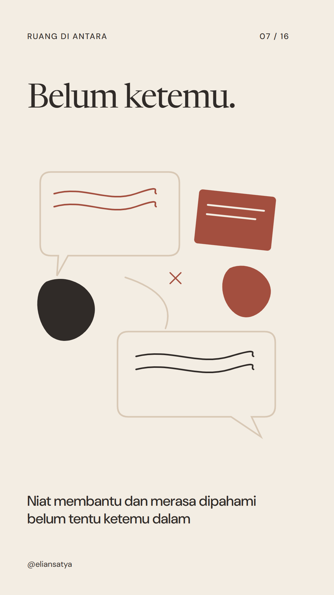
Separate the offered solution from the receiving speech space.
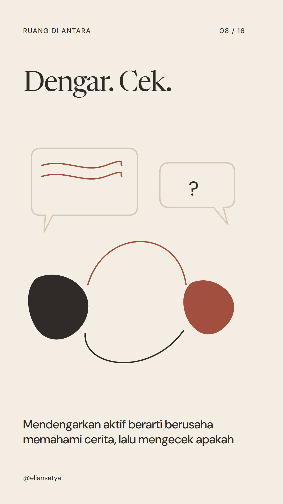
Show a return path checking a story against the speaker.
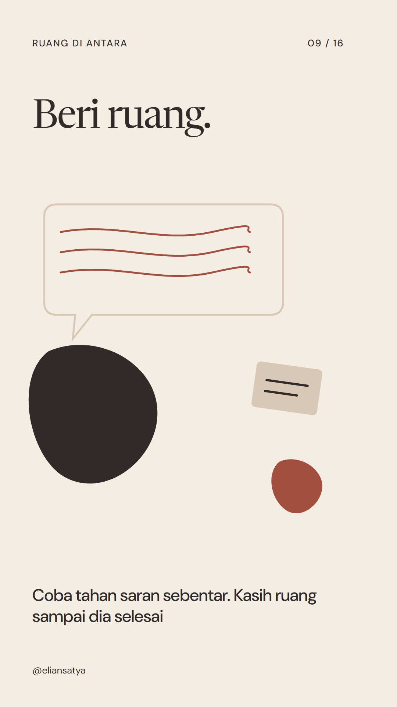
Move advice aside as three parts of the story unfold.
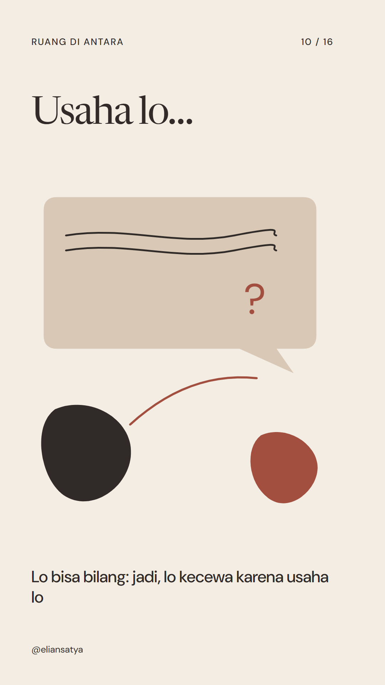
Turn an inferred feeling into a question returned to the speaker.
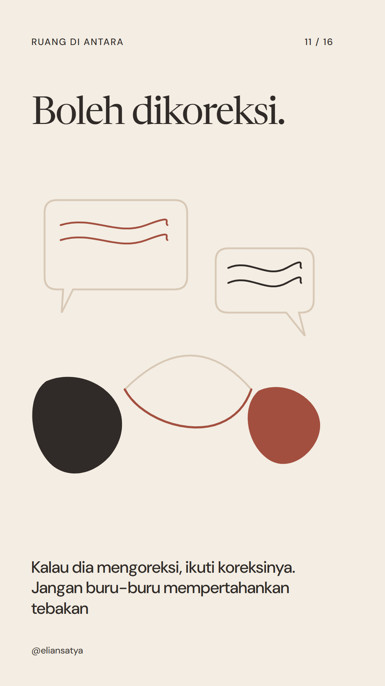
Replace the tentative listening path with the corrected route.
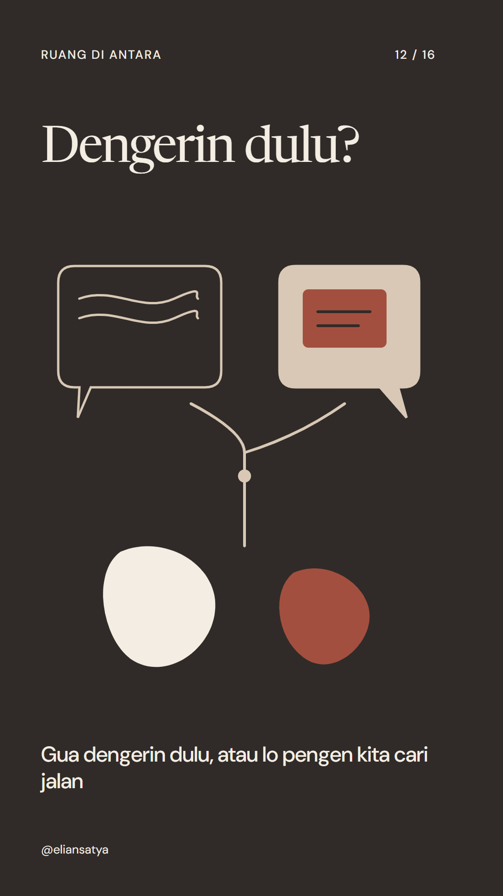
Open two support options on a fork, leaving the speaker agency.
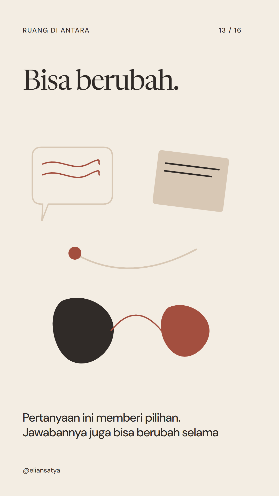
Move a shared marker between options without ranking either.
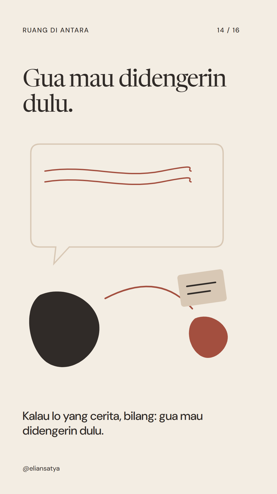
Give the original speaker a clear request in their own space.
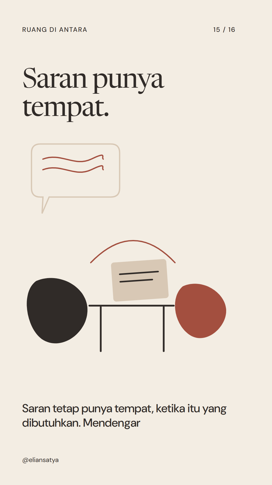
Bring the solution note back onto a shared table after listening.
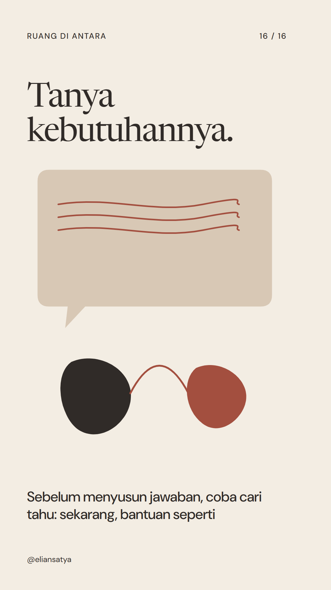
End with a large shared conversation space and deliberate quiet hold.